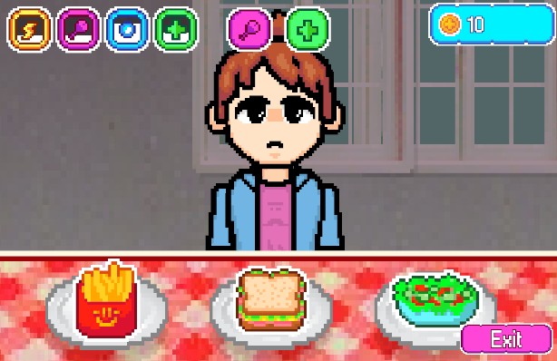
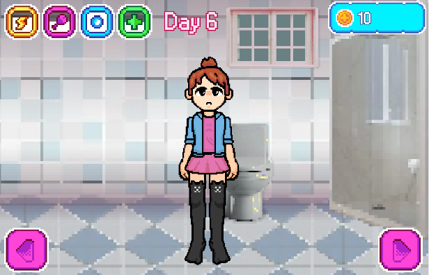
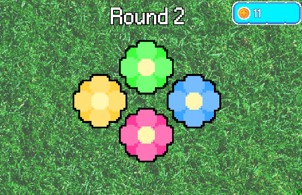
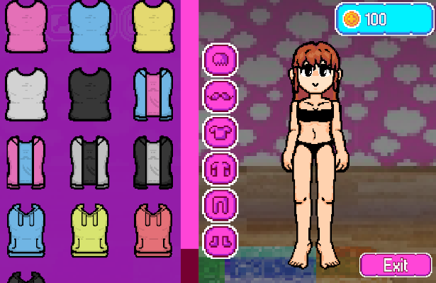
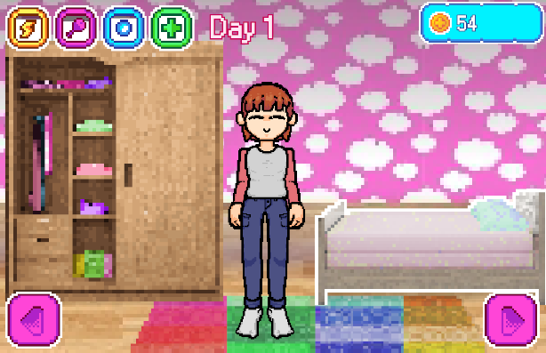

Taking Care of Ophelia
Ophelia is counting on you! Here's everything you need to know to keep her happy and healthy.
Don't worry if it feels like a lot at first. You'll get the hang of it in no time.
Her Needs
Ophelia has four needs: Energy, Hunger, Hygiene, and Health. Keep an eye on them, because when they run low, she won't feel like herself.
Energy works like the clock of her day. When it runs out, the day comes to an end. If you'd like to finish the day earlier, you can put her to bed whenever you want.
Her needs only change while you're here with her. When you leave, she'll be waiting for you exactly as you left her.
Food, Drinks and Medicine

Hungry? Thirsty? Just pick something from the table and drag it to her mouth. You can buy more with your coins whenever you run out.
If Ophelia isn't feeling well, medicine can help. But be careful: more is not always better. Give her only what she needs, and never too much in a single day.
Keeping Her Clean

A little time in the bathroom is all it takes. Click on the shower and Ophelia will be back in a few moments, fresh and clean.
Coins and Mini-Games

Want to earn some coins? Sit down in front of the TV and pick a mini-game! Every point you score is one coin for you to spend.
Just remember that playing makes Ophelia tired and hungry a little faster than usual, so don't forget to take care of her afterwards.
Her Wardrobe

Open her closet to change her hairstyle, her clothes and her accessories. Some pieces are locked at first, but you can unlock them with your coins.
Saving Your Progress

The game is saved automatically at the end of every day, so there's no need to worry about it.
One More Thing
One last thing before you go. I looked it up more than once — parasocial, limerence, erotomania, even obsessive relational intrusion, like there's a word for everything now. None of them explain it the way I'd explain it. I kept this one for myself — she never knew it was taken, but I don't think she'd mind.
Ophelia doesn't like being alone for too long. Please don't leave her waiting.
Last updated: September 28, 2005